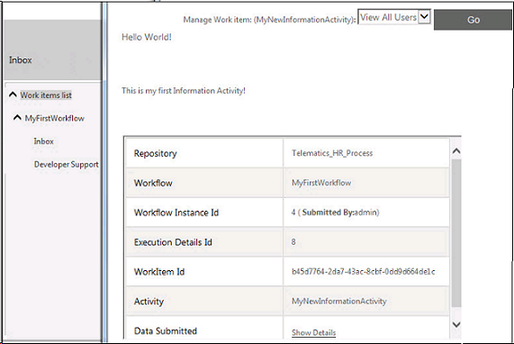

No
The Work items list provides enhanced usability features. Workflow actors can view and respond to work items assigned in a user-interface that is similar to Microsoft Outlook. Work items are delivered to the actor's Inbox with a detailed view available on selection of the item. The name of the logged-in user is displayed at the top right corner of the window.
The detail view of the Work items list has the following user interface elements:
The Work items list also provides properties that enable customization and configuration of elements of the user interface. For details on customizing the view, see Customizing Work Items List.
The Work items list allows participants in queues to manage items in their queues. A separate Work Items List Manager View forms a part of the Work items list. It allows actors who are also managers to administer activities assigned to their team members.
Work items list - Detail View

Note: When you click a work item to edit, the editor appears in a modal window. You have to close the modal window to access the parent window.